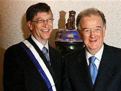

Bill Gates, Người sáng lập công ty phần mềm Microsoft và là người giàu nhất thế giới, cho biết cơ quan thuế của Mỹ phải lưu trữ các dữ liệu tài chính của ông vào một máy tính đặc biệt, bởi tài sản của ông quá nhiều.
Phát biểu tại một hội nghị do Microsoft tổ chức ở Lisbon, thủ đô Bồ Đào Nha, ông nói rằng một máy tính thông thường không thể xử lý đúng các số liệu tài chính của ông. Cụ thể là trong quá khứ ông đã rất nhiều lần nhận giấy báo nộp thuế không chính xác và sở thuế phải điều chỉnh nhiều lần mới đúng được.
Theo số liệu mới nhất do tạp chí Forbes công bố, tài sản của ông Gates lên đến 47 tỉ USD. Hai vợ chồng ông đã hiến tặng 29 tỉ USD cho hoạt động từ thiện toàn cầu.